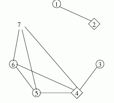

输入：两个整数n（1<=n<=200000）和m（1<=m<=500000），n代表城市数，m代表道路的总数，接下来m行每行两个整数ai和bi，表示城市ai和城市bi有道路相接。不会有重边。
Zy皇帝面临一个严峻的问题，两个互相抵触的贸易团体，YYD工会和FSR工会，他们在同一时间请求在王国各个城市开办自己的办事处。这里有n个城市，其中有一些以双向马路相连，这两个工会要求每个城市应该做到： 1：有这个工会的办事处或 2：和另外一个符合1条件的城市有马路直接相连。（也就是每个城市必须是YYD的公会，但是又和FSR的公会的城市相连，或者是FSR的，和YYD的城市相连，或者和两个工会的城市相连）但是Zy怀疑不正当的竞争，他担心一个城市有两个工会的办事处，（就是说一个城市不能有两个工会的办事处）只将导致贸易的垄断（政治怎么学的），所以他请求他日夜栽培的你给予帮助。
输入：两个整数n（1<=n<=200000）和m（1<=m<=500000），n代表城市数，m代表道路的总数，接下来m行每行两个整数ai和bi，表示城市ai和城市bi有道路相接。不会有重边。
输出：如果这些公会的办事处能够不违反规则的开办则第一行输出TAK（波兰语的Yes），如果这些工会的办事处无法按照规则开办，就输出NIE（波兰语的No）。
7 8
1 2
3 4
5 4
6 4
7 4
5 6
5 7
6 7
TAK

YYD的城市是圆圈,FSR的城市是菱形.